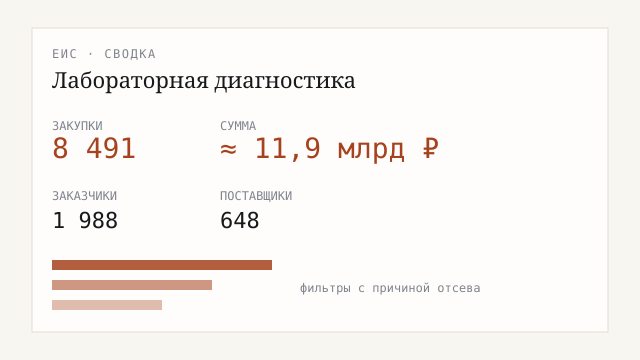

Кейс · 02
Сколько государство покупает лабораторных исследований
Для компании, которая думает заходить на рынок через госзаказ: сколько в стране покупают лабораторные исследования за бюджетные деньги, в каких регионах, кто заказывает и кто выполняет.
- Закупок
- 8 491
- По начальной цене
- ≈ 11,9 млрд ₽
- Заказчиков
- 1 988
- Исполнителей
- 648

Что сделал
Выгрузил закупки, убрал лишнее (ремонт лабораторий, реагенты, программы), посчитал объём, географию и конкуренцию. К отчёту приложил примеры «что вошло» и «что выкинули» — чтобы цифрам можно было верить.
Что на выходе
- Пилот за 2025 год: 8 491 закупка · 9 529 контрактов
- Около 11,9 млрд ₽ по начальной цене · около 12,5 млрд ₽ по контрактам
- 1 988 заказчиков · 648 исполнителей
- Пакет: сводка на одну страницу, Excel, примеры для совместной проверки
Прозрачные фильтры: нерелевантные закупки отсекаются с причиной — не «сырой дамп».
Хотите понять объём госзаказа в вашей нише? Опишите задачу →